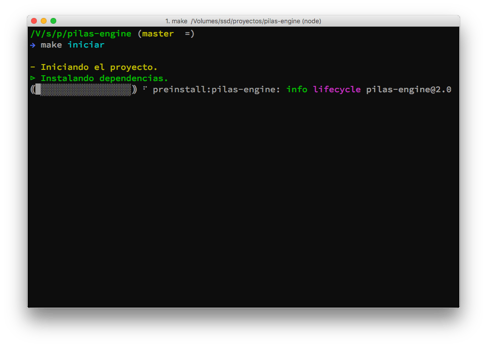
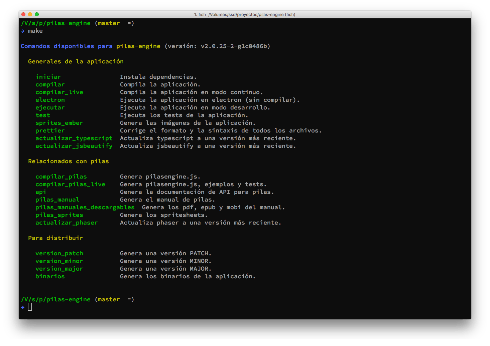
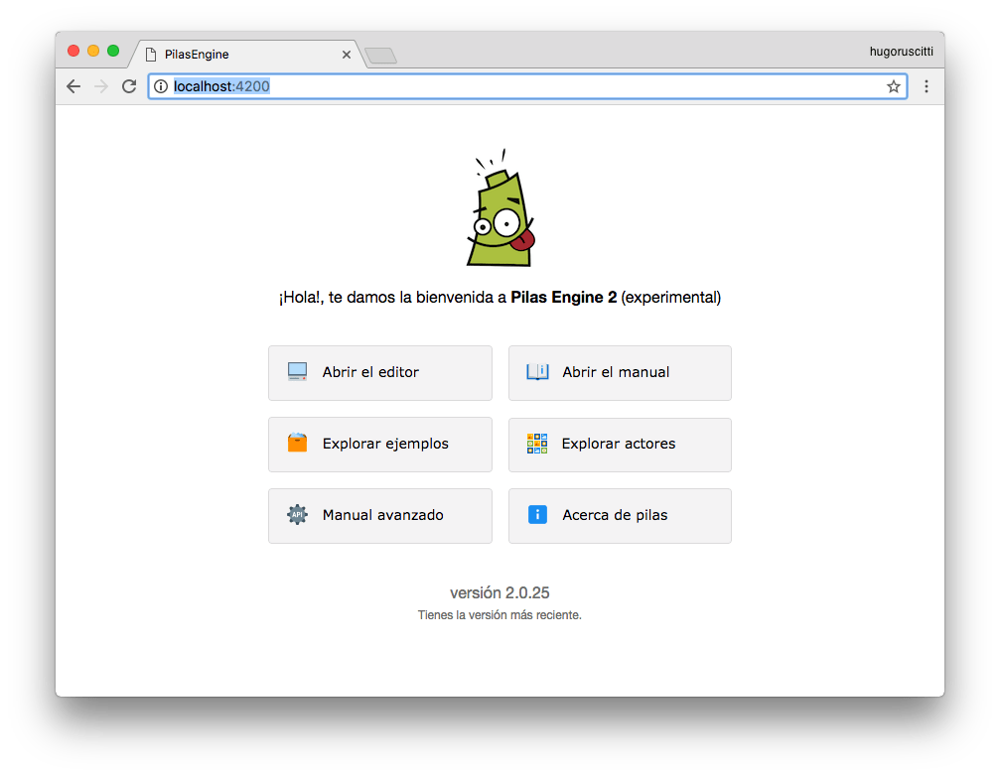

Якщо ви розробник і хочете скопіювати повне середовище для редагування коду Pilas Engine, ми рекомендуємо низку кроків, щоб це реалізувати.
Незважаючи на те, що це дуже детальний розділ підручника з використання Pilas Engine, ви можете поставити будь-які запитання щодо нього на форумі (https://foro.pilas-engine.com.ar), щоб ми могли покращити підручник.
Для створення Pilas ми в основному використовуємо JavaScript разом із кількома фреймворками та іншими інструментами. Найважливіші з них:
Це основні файли репозиторію та функції, які вони виконують:
| Каталог | Для чого він використовується? |
|---|---|
| api_docs | Зберігає результат автоматичного документування. Якщо ви виконаєте "make api", ви побачите, як запускається код Pilas Engine і генерується ця документація. |
| app | Це важливий каталог, тут міститься весь початковий код застосунку, створеного за допомогою Ember. Всередині знаходяться шаблони, контролери, компоненти та маршрути. Далі в цьому підручнику ми розповімо, як редагувати файли в цьому каталозі. Але загалом, за допомогою "make ejecutar" або "make compilar" ви можете викликати Ember, щоб перетворити весь каталог на вебзастосунок. |
| manual | Містить повний посібник з Pilas Engine у markdown-форматі. Ви можете редагувати вміст будь-яким текстовим редактором, а щоб конвертувати його в .html і переглядати у застосунку, потрібно виконати команду "make pilas_manual". |
| pilas-engine | Містить початковий код механізму Pilas Engine. Код створено за допомогою сценарію TypeScript, тому для його компіляції вам потрібно виконати команду "make compilar_pilas" або «make compilar_pilas_live» для автоматичного внесенння змін. |
| public | Зберігає всі файли, які будуть обслуговуватися з програми за допомогою emberjs. Наприклад, зображення, джерела та звуки. Але крім того, цей каталог також оновлюється іншими командами. Наприклад, коли ми компілюємо код у каталозі pilas-engine за допомогою команди "make compilar_pilas", згенерований файл копіюється до каталогу "public". |
| tests | Ці тести виконуються, коли викликається команда "make test" або коли виконується "make ejecutar", а потім вводиться http://localhost:4200/tests. Крім того, вони виконуються дистанційно кожного разу, коли здійснюється надсилання до репозиторію. Далі в цьому документі описано, як тести працюють у структурі проєкту. |
Перш ніж почати, вам потрібно встановити NodeJS 8 і менеджер пакунків "yarn".
Якщо ви хочете переконатися, що все встановлено правильно, напишіть наступні команди:
npm install -g yarn
node -vПовний код Pilas зберігається на Github у репозиторії:
Ми рекомендуємо вам запустити розгалуження сховища (створити форк), перш ніж продовжити, тут є інструкції щодо розгалуження репозиторію: https://help.github.com/articles/fork-a-repo/
Після розгалуження клонуйте репозиторій за допомогою цих команд і встановіть залежності проєкту:
make iniciarВи повинні побачити, що всі залежності встановлюються всередині каталогу "node_modules". Це може зайняти кілька хвилин:

Після завершення встановлення залежностей ви можете виконати команду "make". Коли ви її виконаєте, на екрані з’являться всі покликання, які ми використовуємо в рамках проєкту:

Очевидно, що в більшості випадків ми використовуємо лише кілька команд, але ми завжди оновлюватимемо цей список, щоб спростити розробку.
Щоб запустити вебсервер Ember, ви можете виконати цю команду:
make ejecutarі відкрити цю адресу у вебпереглядачі: http://localhost:4200

Зверніть увагу, що вебсервер Ember буде реагувати щоразу, коли ви змінюєте код у файлах. Відповідно, зміни будуть автоматично відображатися у вебпереглядачі.
Ми рекомендуємо вам писати код іспанською мовою (😜), коли це можливо (😎), і ті змінні або методи, які мають кілька слів, ми спробуємо записати їх як "nombre_del_metodo" замість "nombreDelMetodo".
Крім того, дуже важливо, щоб ваш редактор був налаштований на автоматичне використання Prettier (https://prettier.io/).
Проєкт включає тести. Тести зберігаються в каталозі "tests", і кожен з них призначений для забезпечення роботи певної функції.
Наприклад, файл tests/acceptance/puede-ingresar-al-editor-test.js відповідає за імітацію поведінки користувача, який входить у застосунок та починає взаємодіяти з інтерфейсом.
Кожен оператор у файлі намагається імітувати дію користувача та супроводжується деякою перевіркою:
Так, ми впевнені, що зможемо перевірити роботу усіх інструментів автоматизовано. Це дозволяє нам виявляти помилки та дає нам впевненість у реструктуризації або покращенні внутрішніх частин застосунку, знаючи, які функції можуть працювати некоректно.
Якщо ви запустите команду "make ejecutar" і відкриєте програму у вебпереглядачі за адресою "http://localhost:4200", ви також зможете запустити тести безпосередньо у вебпереглядачі.
Вам потрібно буде ввести адресу: "http://localhost:4200/tests":

На зображенні позначено дві опції, які є дуже корисними. Перша запобігає заповненню екрана деталями добре виконаних тестів, а друга є просто естетичною: вона використовується, щоб побачити, як тести виглядають візуально.
Є кілька завдань, які виконуються автоматично кожного разу, коли ми надсилаємо до сховища GitHub.
Наприклад, кожного разу, коли на github виконується push, служба під назвою "circle-ci" відповідає за виконання всіх тестів проєкту з нуля.
Ця служба не лише запускає тести, але й сповіщає нас електронною поштою, якщо будь-який із тестів не пройшов або виникли проблеми на будь-якому етапі інсталяції. Служба також генерує список історії, щоб перевірити, чи вносились зміни про якийсь тип помилки:

Ми також використовуємо "circle-ci" щоразу, коли робимо стабільний випуск, щоб створювати бінарні файли та вебверсії ігрового рушія.
Ми використовуємо тег, щоб позначити, що Pilas можна публікувати. Теги будуть виявлені Circle CI для створення бінарних файлів і завантаження оновленої версії ігрового рушія в Інтернет.
 Наприклад, на зображенні ви бачите тег версії v2.0.25. Коли це сталося, "circle-ci" згенерував ці файли, щоб версія була скомпільована та доступна для завантаження звідси:
Наприклад, на зображенні ви бачите тег версії v2.0.25. Коли це сталося, "circle-ci" згенерував ці файли, щоб версія була скомпільована та доступна для завантаження звідси:

Хоча ці кроки є автоматичними, усі деталі того, що потрібно виконати, містяться у файлі .circleci/config.yml.